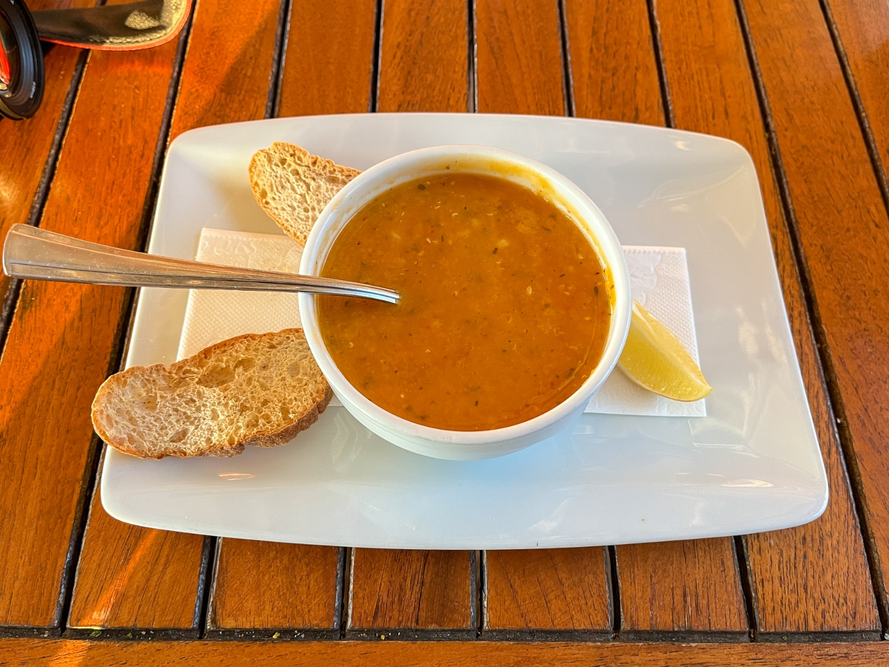
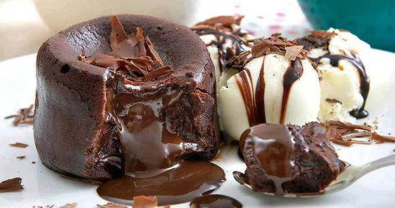

Mercimek Çorbası
Malzemeler:
- 1 su bardağı kırmızı mercimek
- 1 adet orta boy soğan
- 1 yemek kaşığı un
- 1 yemek kaşığı tereyağı
- 1 yemek kaşığı sıvı yağ
- 5 su bardağı sıcak su (veya et/tavuk suyu)
- 1 tatlı kaşığı tuz
- Yarım çay kaşığı karabiber
- 1 tatlı kaşığı kırmızı toz biber (isteğe bağlı)

Tarif:
- Soğanları pembeleşene kadar kavur.
- Un ekleyip kısık ateşte kavurmaya devam et.
- Mercimek, havuç ve suyu ekle; yumuşayana kadar pişir.
- Blenderdan geçir, baharatları ekle.
- Üzerine tereyağı ve kırmızı biberli sos gezdir.
Pirinç Pilavı
- 2 su bardağı pirinç
- 2,5 su bardağı sıcak su
- 3 yemek kaşığı tereyağı
- 1 yemek kaşığı sıvı yağ
- Tuz

- Pirinçleri ılık tuzlu suda beklet, süz ve yıka.
- Tereyağında kavur, suyu ekle, kısık ateşte pişir.
- Demlendir, karıştır, servis et.
Çoban Salatası
- 1 domates, 1 salatalık, 1 yeşil biber
- Yarım soğan, tuz, limon, zeytinyağı

- Tüm malzemeleri küçük doğra, karıştır.
- Üzerine limon suyu ve zeytinyağı ekle.
Paçanga Böreği
- Yufka, domates, biber, kaşar, pastırma
- Sıvı yağ
- İç harcı hazırla, yufkaya koy, sar.
- Kızgın yağda önlü arkalı kızart.
Köfte
- 500 gr kıyma, 1 soğan, 1 yumurta, baharatlar

- Tüm malzemeleri yoğur, dolapta dinlendir.
- Şekil verip az yağda pişir.
Sufle
- 3 yumurta, 80g çikolata, 50g tereyağı, ½ su bardağı un, şeker

- Çikolatayı tereyağında erit.
- Yumurta ve şekeri çırp, karıştır.
- Kalıplara dök, 220°C’de 7–8 dk pişir.
Ayran
- 1 bardak yoğurt, 1 bardak su, tuz

- Tüm malzemeleri blender’da karıştır.
- Soğuk servis et.